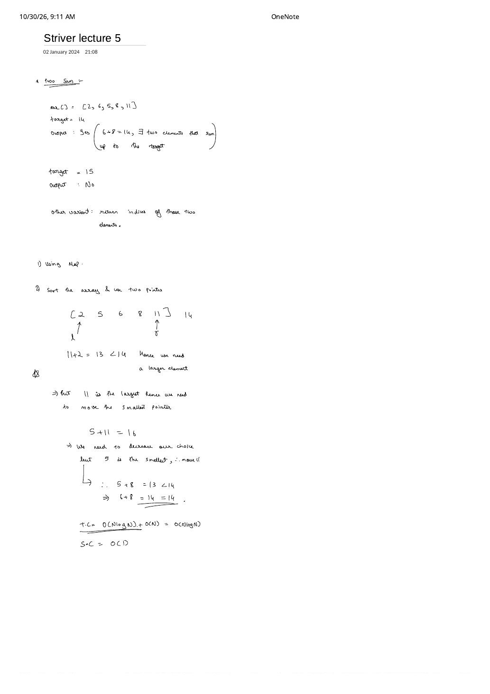
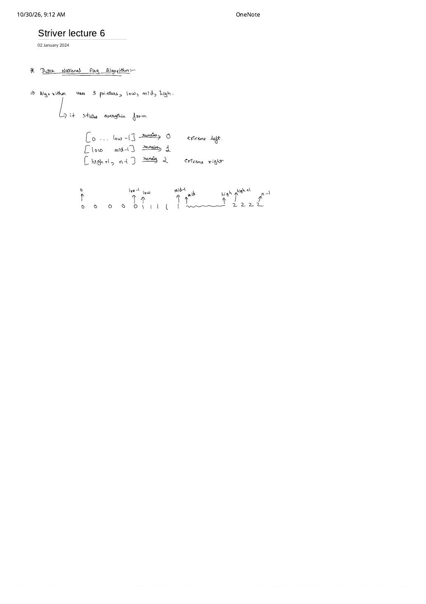
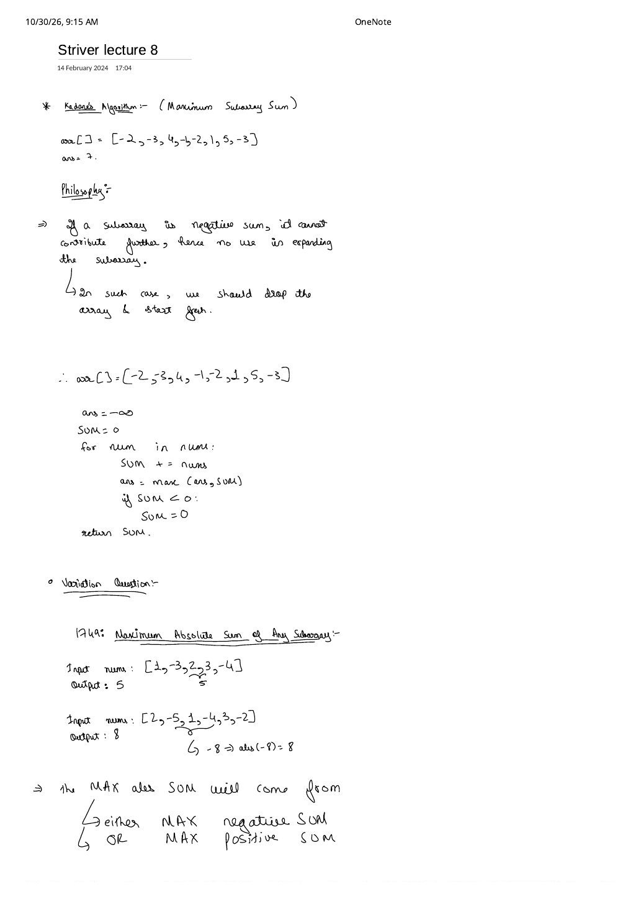
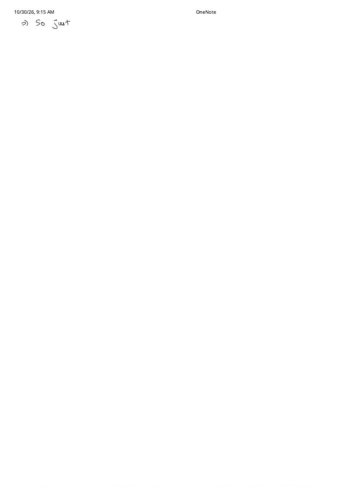
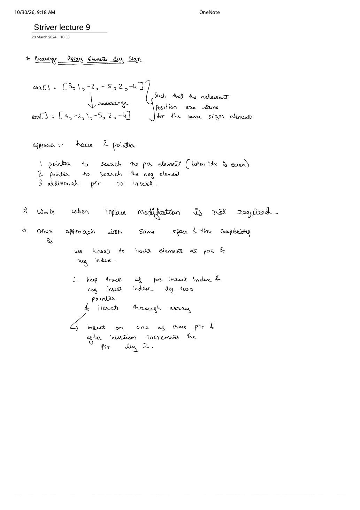
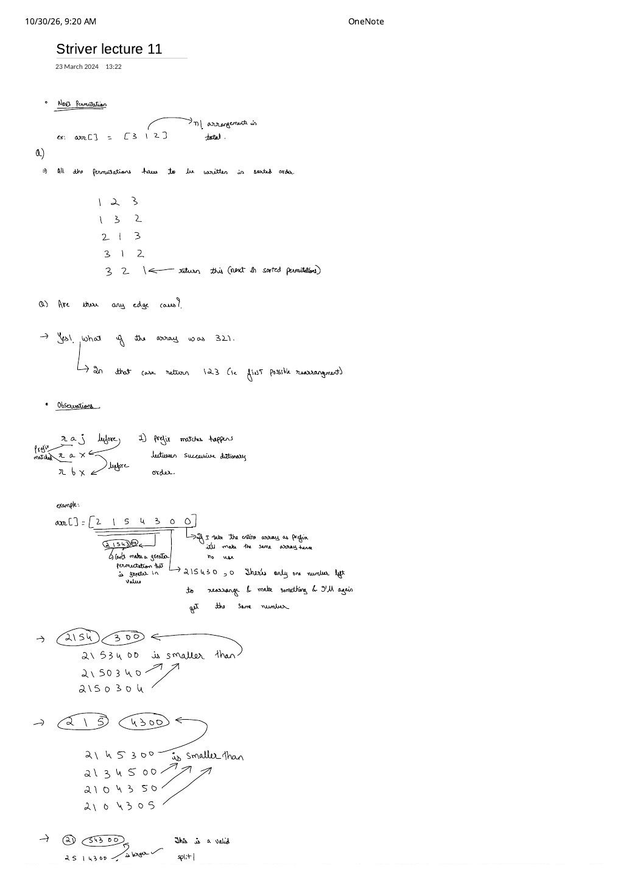
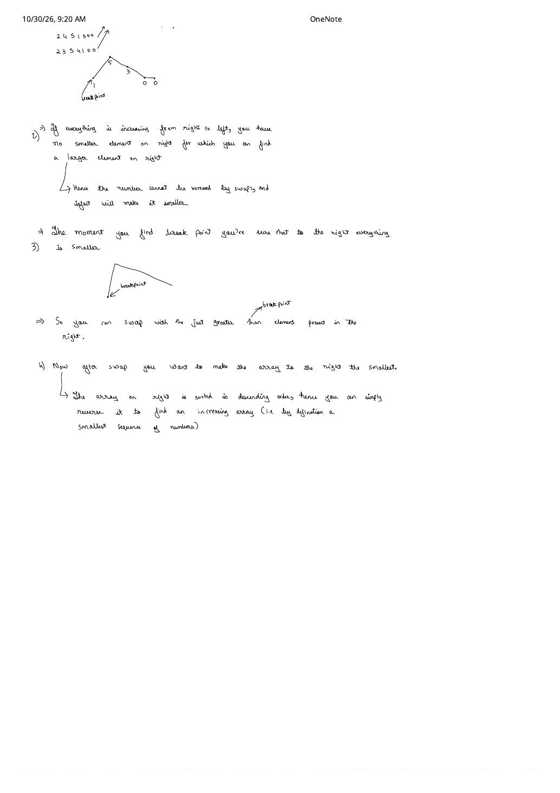

Part 2: Two Sum, Dutch National Flag, Kadane's Subarray Sum & Next Permutation
Expanded from handwritten competitive coding study notes (05_Striver_lecture_5.pdf, 06_Striver_lecture_6.pdf, 09_Striver_lecture_8.pdf, 10_Striver_lecture_9.pdf, 12_Striver_lecture_11.pdf — 7 pages) · Jump to original scans
Moving into medium-hard interview classics, these five Striver A2Z notebooks (Lectures 5, 6, 8, 9, and 11 — Lectures 7 and 10 were not recorded as separate PDFs in the folder) showcase five distinct structural invariants: converging sorted pointers, 3-way region partitioning, prefix-drop Kadane DP, even/odd parity indexing, and lexicographic breakpoint reversal.
1. Lecture 5 — Two Sum: Hash Map vs. Converging Two Pointers (LC 1)
Given arr = [2, 6, 5, 8, 11], determine whether two distinct indices sum to target = 14 (Yes, since $6 + 8 = 14$; for target = 15, No), or in Variant 2 (LC 1), return their original 0-based indices.
- Brute Force ($\mathcal{O}(n^2)$ time, $\mathcal{O}(1)$ space): Test every pair $(i, j)$ with $i < j$.
- Approach 1 — One-Pass Complement Hash Map ($\mathcal{O}(n)$ expected / $\mathcal{O}(n \log n)$ ordered map, $\mathcal{O}(n)$ space): As you scan
arr[i], check whetherneed = target - arr[i]is already inseen. If yes, return{seen[need], i}; otherwise storeseen[arr[i]] = i. This is optimal for Variant 2 (returning original indices) because sorting destroys index positions unless you allocate an extra $\mathcal{O}(n)$ array of(value, originalIndex)pairs anyway. - Approach 2 — Sort + Opposite-End Two Pointers ($\mathcal{O}(n \log n)$ time, $\mathcal{O}(1)$ extra space): When only a
Yes / Noexistence check (or the pair of values) is needed and $\mathcal{O}(1)$ auxiliary memory is required, sort the array first and placel = 0(smallest) andr = n - 1(largest):- If
arr[l] + arr[r] < target: even paired with the largest remaining elementarr[r],arr[l]is too small — eliminatelvial++. - If
arr[l] + arr[r] > target: even paired with the smallest remaining elementarr[l],arr[r]is too large — eliminaterviar--.
- If
Sorted Two-Pointer Dry Run on [2, 5, 6, 8, 11], target = 14 (Lecture 5, Page 1)
1. l = 0 (2), r = 4 (11): $2 + 11 = 13 < 14 \implies$ need a larger sum, 11 is already maximal $\implies$ advance l++.2.
l = 1 (5), r = 4 (11): $5 + 11 = 16 > 14 \implies$ need a smaller sum $\implies$ decrement r--.3.
l = 1 (5), r = 3 (8): $5 + 8 = 13 < 14 \implies$ advance l++.4.
l = 2 (6), r = 3 (8): $6 + 8 = 14 == 14 \implies$ Found! Total: $\mathcal{O}(n \log n) + \mathcal{O}(n) = \mathcal{O}(n \log n)$ time, $\mathcal{O}(1)$ space.
// Variant 2 (LC 1): Return original indices in O(n) average time, O(n) space
vector<int> twoSumIndices(const vector<int>& nums, int target) {
unordered_map<int, int> seen;
for (int i = 0; i < (int)nums.size(); ++i) {
int need = target - nums[i];
auto it = seen.find(need);
if (it != seen.end()) return {it->second, i};
seen[nums[i]] = i;
}
return {-1, -1};
}
// Variant 1: Existence check in O(n log n) time, O(1) extra space
bool twoSumExists(vector<int> nums, int target) {
sort(nums.begin(), nums.end());
int l = 0, r = (int)nums.size() - 1;
while (l < r) {
long long s = (long long)nums[l] + nums[r];
if (s == target) return true;
if (s < target) ++l;
else --r;
}
return false;
}2. Lecture 6 — Sort 0s, 1s, and 2s: Dutch National Flag Algorithm (LC 75)
Sorting an array containing only {0, 1, 2} takes $\mathcal{O}(n \log n)$ generically, or $\mathcal{O}(2n)$ via two passes (count frequencies of 0, 1, 2 in Pass 1; overwrite slices in Pass 2). Edsger Dijkstra's Dutch National Flag (DNF) algorithm sorts the array in a single $\mathcal{O}(n)$ pass and $\mathcal{O}(1)$ space using three pointers (low, mid, high) that partition the array into four disjoint zones:
low = 0, mid = 0, high = n - 1 so the entire array sits inside the dashed unknown region [mid..high]. Every step shrinks high - mid + 1 by exactly 1 until mid > high.Why mid Advances on 0, Advances on 1, but Stays Put on 2
- Case
arr[mid] == 0:swap(arr[low], arr[mid]); low++; mid++;— Why is it safe to incrementmidwithout re-checking what came back fromarr[low]? Because iflow == midwe swapped the element with itself, and iflow < mid,arr[low]lived inside[low .. mid - 1], which by invariant is guaranteed to be1! - Case
arr[mid] == 1:mid++;— Already belongs at the right end of the1s zone. - Case
arr[mid] == 2:swap(arr[mid], arr[high]); high--;— Do NOT incrementmid! The element pulled fromarr[high]sat at the right edge of the unknown zone[mid .. high]and could be0,1, or2; it must be inspected on the next iteration.
void sortColors(vector<int>& nums) {
int low = 0, mid = 0, high = (int)nums.size() - 1;
while (mid <= high) {
if (nums[mid] == 0) {
swap(nums[low++], nums[mid++]);
} else if (nums[mid] == 1) {
++mid;
} else { // nums[mid] == 2
swap(nums[mid], nums[high--]);
}
}
}3. Lecture 8 — Kadane's Algorithm (LC 53) & Max Absolute Subarray Sum (LC 1749)
3.1 Maximum Subarray Sum & Kadane's Reset Philosophy
Given arr = [-2, -3, 4, -1, -2, 1, 5, -3], the maximum contiguous subarray sum is 7, achieved by [4, -1, -2, 1, 5]. Checking all $\binom{n+1}{2}$ subarrays via prefix sums takes $\mathcal{O}(n^2)$.
Kadane's Philosophy (Lecture 8, Page 1)
"If a subarray has a negative sum, it cannot contribute positively to any future extension — hence there is no use in expanding that subarray. Drop the subarray (sum = 0) and start fresh!"
Crucially, note that a subarray whose running sum dips downward while remaining positive is still worth carrying! On [4, -1, -2, 1, 5], after 4 + (-1) + (-2) = +1 > 0, keeping that +1 prefix boosts the subsequent [1, 5] from 6 up to 7.
Two Critical Bugs to Avoid When Coding Kadane From Scratch
1. Update ans = max(ans, sum) BEFORE resetting if (sum < 0) sum = 0! On an all-negative array like [-5, -2, -8], resetting first turns every step into 0 and falsely returns 0 instead of the required non-empty answer -2.
2. Return ans, never sum! (Notice at the bottom of Lecture 8 Page 1's handwritten sketch, return SUM was written accidentally — on [-2, -3, 4, -1, -2, 1, 5, -3], trailing -3 leaves sum = 4 while ans = 7 holds the true peak!)
// Kadane's Algorithm + exact subarray [ansStart..ansEnd] recovery: O(n) time, O(1) space
long long maxSubArrayWithSpan(const vector<int>& nums, int& ansStart, int& ansEnd) {
long long ans = LLONG_MIN, sum = 0;
int candStart = 0;
ansStart = ansEnd = 0;
for (int i = 0; i < (int)nums.size(); ++i) {
if (sum == 0) candStart = i;
sum += nums[i];
if (sum > ans) {
ans = sum;
ansStart = candStart;
ansEnd = i;
}
if (sum < 0) sum = 0;
}
return ans;
}3.2 Variation — LC 1749: Maximum Absolute Sum of Any Subarray
Suppose we want $\max_{l \le r} \bigl|\sum_{k=l}^{r} \text{nums}[k]\bigr|$. Look at the two handwritten test cases on Lecture 8 Page 1:
nums = [1, -3, 2, 3, -4]$\implies$ subarray[2, 3]has sum $+5$, output5.nums = [2, -5, 1, -4, 3, -2]$\implies$ subarray[-5, 1, -4]has sum $-8$, and $|-8| = \mathbf{8}$!
Completing the handwritten derivation across Pages 1–2: since $|S| = \max(S, -S)$, the largest absolute subarray sum is simply the larger of (a) the maximum positive subarray sum (standard Kadane) and (b) the absolute value of the most negative subarray sum (mirror Kadane that resets minSum = 0 whenever minSum > 0). Equivalently, in prefix-sum coordinates $P_k = \sum_{i < k}\text{nums}[i]$ (with $P_0 = 0$), $\max_{0 \le l \le r \le n}|P_r - P_l| = \max_k P_k - \min_k P_k$!
// LC 1749: Dual-Kadane formulation matching Lecture 8 Page 1 (O(n) time, O(1) space)
int maxAbsoluteSum(const vector<int>& nums) {
int maxPos = 0, minNeg = 0;
int curMax = 0, curMin = 0;
for (int x : nums) {
curMax = max(0, curMax + x);
curMin = min(0, curMin + x);
maxPos = max(maxPos, curMax);
minNeg = min(minNeg, curMin);
}
return max(maxPos, -minNeg);
}4. Lecture 9 — Rearrange Array Elements by Sign (LC 2149)
Given an even-length array with $n/2$ positive and $n/2$ negative integers, e.g. arr = [3, 1, -2, -5, 2, -4], interleave them as [+, -, +, -, +, -] = [3, -2, 1, -5, 2, -4] while preserving the relative order of same-sign elements (3, 1, 2 and -2, -5, -4).
- Why $\mathcal{O}(1)$ extra space isn't free: Standard in-place two-pointer swaps destroy relative order, while stable in-place cyclic right-shifts cost $\mathcal{O}(n^2)$ time in the worst case. Thus $\mathcal{O}(n)$ auxiliary space is required for $\mathcal{O}(n)$ runtime.
- Two-Pass Bucket Baseline ($\mathcal{O}(2n)$ time, $\mathcal{O}(n)$ space): Split into
pos[]andneg[], then writearr[2*i] = pos[i],arr[2*i + 1] = neg[i]. (Note: this two-bucket approach remains the clean $\mathcal{O}(2n)$ solution for the unequal-counts variant where leftover positives or negatives are appended at the tail!) - Optimal Single-Pass Parity Indexing ($\mathcal{O}(n)$ time, $\mathcal{O}(n)$ space — Lecture 9, Page 1): Because every positive lands on an even slot ($0, 2, 4, \dots$) and every negative lands on an odd slot ($1, 3, 5, \dots$), track
posIdx = 0andnegIdx = 1into the output vector and advance whichever pointer you write to by+2!
vector<int> rearrangeArray(const vector<int>& nums) {
vector<int> ans(nums.size());
int posIdx = 0, negIdx = 1;
for (int x : nums) {
if (x > 0) {
ans[posIdx] = x;
posIdx += 2;
} else {
ans[negIdx] = x;
negIdx += 2;
}
}
return ans;
}5. Lecture 11 — Next Permutation: The 4-Observation Derivation (LC 31)
Given an array like arr = [3, 1, 2], rearrange its elements in-place into the next lexicographically greater permutation ([3, 2, 1]). If the array is already the largest permutation (strictly non-increasing, e.g. [3, 2, 1]), wrap around to the smallest sorted permutation ([1, 2, 3]). Generating all $n!$ permutations takes $\mathcal{O}(n! \cdot n)$ — completely infeasible for $n = 100$.
Pages 1–2 of Lecture 11 derive the optimal $\mathcal{O}(n)$-time, $\mathcal{O}(1)$-space algorithm from scratch on arr = [2, 1, 5, 4, 3, 0, 0] via four observations:
- Longest Prefix Match (Dictionary Principle:
raj < rax < rbx): Adjacent words in a dictionary share the longest possible prefix. To step to the very next permutation, we must modify the array as far to the right as possible. - Finding the Breakpoint (
ind) from Right to Left: Try keeping prefix[2, 1, 5, 4]and rearranging suffix[3, 0, 0]— impossible,300is already the largest number formable from $\{3, 0, 0\}$! Same for[4, 3, 0, 0]and[5, 4, 3, 0, 0]: as long as digits rise from right to left ($\text{arr}[i] \ge \text{arr}[i + 1]$), every swap only makes the number smaller. The first index from the right where $\text{arr}[i] < \text{arr}[i + 1]$ is our breakpoint: hereind = 1($\text{arr}[1] = 1 < 5$). (If no suchindexists, the whole array is descending — just reverse the entire array and return!) - Swap with the Smallest Strictly Greater Suffix Element: We must bump
arr[ind] = 1up by the smallest possible increment using a digit fromarr[ind + 1 .. n - 1] = [5, 4, 3, 0, 0]. Since that suffix is sorted descending, scanning right-to-left ($i = n - 1 \to \text{ind} + 1$) hits the smallest element strictly greater thanarr[ind]first! Herearr[4] = 3 > 1; swapping yields[2, 3 | 5, 4, 1, 0, 0]. - Minimize the Suffix via $\mathcal{O}(n)$ Reversal: Now that our prefix jumped from
2, 1to2, 3, we want the remaining tail to be as small (ascending) as possible. Crucially, swapping1with the rightmost element> 1preserved the non-increasing order of[5, 4, 1, 0, 0]! So instead of $\mathcal{O}(n \log n)$ sorting, simply reversearr[ind + 1 .. n - 1]to get[2, 3, 0, 0, 1, 4, 5]in $\mathcal{O}(n)$ time!
[2, 1, 5, 4, 3, 0, 0]: scan from the right up the descending slope 0, 0, 3, 4, 5 until dipping down to 1; swap 1 with 3, then reverse [5, 4, 1, 0, 0] $\to$ [2, 3, 0, 0, 1, 4, 5].void nextPermutation(vector<int>& nums) {
int n = (int)nums.size();
int ind = -1;
// Step 1: Find rightmost dip nums[i] < nums[i + 1]
for (int i = n - 2; i >= 0; --i) {
if (nums[i] < nums[i + 1]) {
ind = i;
break;
}
}
// Edge case: entire array is non-increasing (e.g. [3, 2, 1]) -> wrap around
if (ind == -1) {
reverse(nums.begin(), nums.end());
return;
}
// Step 2: Swap nums[ind] with rightmost element strictly greater than nums[ind]
for (int i = n - 1; i > ind; --i) {
if (nums[i] > nums[ind]) {
swap(nums[i], nums[ind]);
break;
}
}
// Step 3: Reverse the non-increasing suffix into smallest ascending order
reverse(nums.begin() + ind + 1, nums.end());
}From the Handwritten Notes
Expand the original handwritten pages below to inspect the exact derivations, dry runs, and annotations from Lectures 5, 6, 8, 9, and 11:
View original note — Striver Lec 5, Page 1 (Two Sum: Map vs. Sorted Two-Pointer Dry Run)


05_Striver_lecture_5.pdf p. 1: Two Sum variants on [2, 6, 5, 8, 11] with target 14 and $\mathcal{O}(n \log n)$ sorted two-pointer trace.View original note — Striver Lec 6, Page 1 (Dutch National Flag 3-Pointer Partition)


06_Striver_lecture_6.pdf p. 1: low, mid, high region boundaries for sorting 0s, 1s, and 2s in one pass.View original note — Striver Lec 8, Page 1 (Kadane's Philosophy & LC 1749 Max Absolute Subarray Sum)


09_Striver_lecture_8.pdf p. 1: Kadane's algorithm on [-2, -3, 4, -1, -2, 1, 5, -3] and LC 1749 decomposition into max positive vs. max negative sum.View original note — Striver Lec 8, Page 2 (LC 1749 Continuation Note)


09_Striver_lecture_8.pdf p. 2: Continuation line at the end of Lecture 8.View original note — Striver Lec 9, Page 1 (Rearrange Array Elements by Sign)


10_Striver_lecture_9.pdf p. 1: Order-preserving sign rearrangement on [3, 1, -2, -5, 2, -4] via stride-2 even/odd insertion pointers.View original note — Striver Lec 11, Page 1 (Next Permutation Dictionary Prefix & Split Tests)


12_Striver_lecture_11.pdf p. 1: Sorted permutations of [3, 1, 2], wrap-around edge case 321 -> 123, dictionary prefix matching, and prefix split attempts on [2, 1, 5, 4, 3, 0, 0].View original note — Striver Lec 11, Page 2 (Breakpoint Slope Sketch, Just-Greater Swap & Suffix Reversal)


12_Striver_lecture_11.pdf p. 2: Right-to-left rising slope, breakpoint detection, swapping with just-greater suffix digit, and reversing the descending suffix.